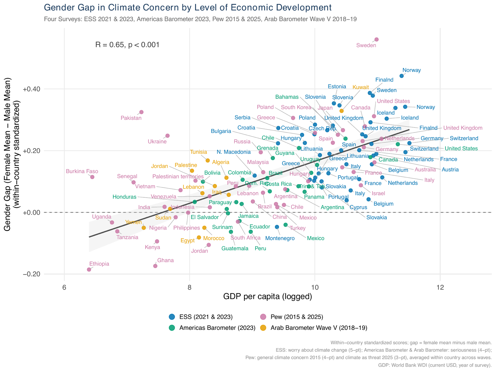
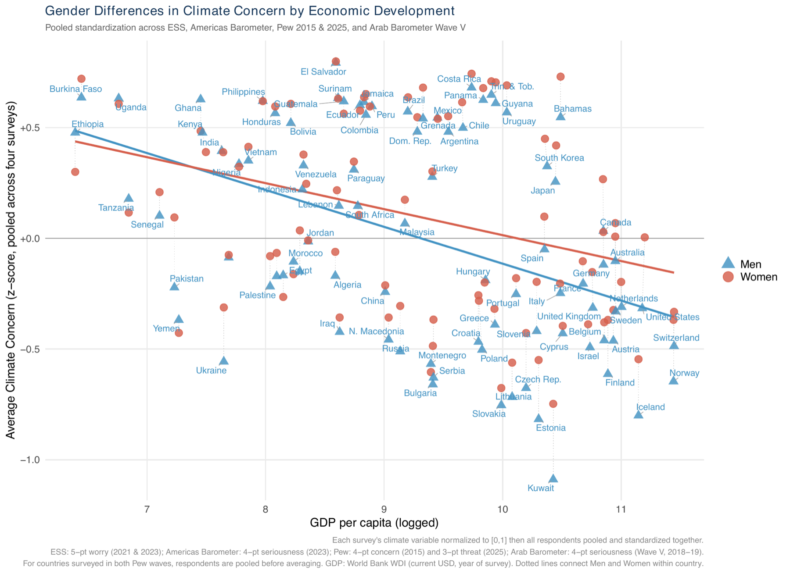

Book project
The Climate Gender Gap
Where and Why Men and Women Think Differently about Climate Change
With Sarah Sunn Bush (University of Pennsylvania)
The puzzle
In wealthy democracies, women consistently express more concern about climate change than men do. That gap is often treated as a fact about gender itself. It is not. Across the world, the size — and even the direction — of the climate gender gap varies enormously, and it varies systematically: gender differences in climate attitudes are highly correlated with national wealth. As countries become richer, women become more likely than men to express concern about our changing climate. In poorer countries, that gap shrinks or disappears.
{kind=link}

The argument
We explain this pattern with a theory about the perceived costs and benefits of climate mitigation policy. At the country level, the perceived benefits of mitigation tend to decrease with economic development while the perceived costs increase — richer countries are less exposed to immediate climate harm and more invested in carbon-intensive consumption. At the individual level, the perceived costs of mitigation rise with development more steeply for men than for women, because men bear more of decarbonization’s material costs — in carbon-intensive work and consumption — and more of its social status costs, because these jobs and goods confer social value.
{kind=link}

The evidence
We test the theory’s implications with an original survey fielded in fifteen countries, in-depth qualitative work in five of them, and original coding of media coverage and political party manifestos across a wide range of cases, alongside existing cross-national survey data. Together these let us trace how and when climate change becomes politicized, and whether messages developed by political parties to resist climate action resonate more strongly with men than with women. The project was supported by the National Science Foundation (SES #2149224).
Read the article
The article laying out the project’s puzzle, theory, and initial results is Bush and Clayton (2023), “Facing Change: Gender and Climate Change Attitudes Worldwide,” American Political Science Review 117(2): 591–608.